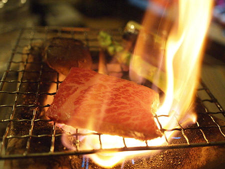
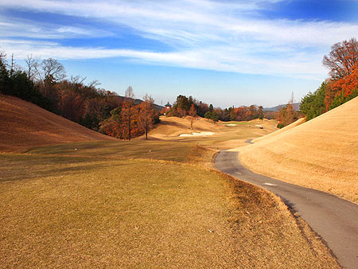

かに風味ブログ
-
はじめまして
台北近郊の人気観光スポット九份に行ってきた。 台北車站から電車に乗って50分くらい＋バス。 とにもかくにも、日本人観光客がわんさか！ここは日本かー？ってぐらい日本語を聞いた。 やっぱ…

-
中文の詩
ある朝起きたら。ポエムってた。 ↓日本語訳 「私のうた」 わたしは日本人、無職だよ！ 毎日お酒飲んでる 中国語の勉強、調子よくない！飲んじゃえ！ 中国語話せない！飲んじゃえ！ 中国語書けない！飲…

-
折り返し地点。
台湾留学も折り返し地点。 はやいねー！ 相変わらず中国語は微妙な成長。 授業が進むほどわけわからないことが山ほど！ 「了」の意味がなんでこんなにあるんだー！！とか（基本、完了を意味する「了」な…

-
国家音楽院
台北のコンサートホール「国家音楽院」に行ってきた。 …というのも、私が大好きなヴァイオリニスト「林昭亮（チョーリャンリン）」のコンサートがあるということを知ったから。 もともと台湾人のチョーリャンリン…

-
>yama
そういえば台湾っぽい写真をあげていなかったなー！ということで、台湾っぽいの。 ↓これは士林夜市の美食街 ↓月桂冠の樹 ↓どこを歩いても目に飛び込んでくる情報量が多い ↓微妙なの（1） …

-
台湾ねこにゃーん！
うちの近所に住んでいるウワサの3匹の猫のうち2匹。あと尻尾がぐねぐねの黒猫がいる。 モデルガンのお店の店番猫 ペットショップの子猫A。遊んで攻撃がすごかった。 ペットショップの子猫B。なん…

-
>のりこおねーさま
相変わらず苦悩の中国語レッスン。 「一起去吃饭」の発音は口を左右に開いて「いちー」口をすぼめて「ちゅー」 また口を左右に広げて舌を上あごに付けて「ちー」上の歯を下唇につけて「ふぁん」…

-
台北暮らし
台北に来て2週間！ 涙の会社退職からてんやわんやの引越しを経て、無事に出国。 なんだかもうイベントてんこもりの2011春！ 台湾に来て10日ぐらいは、街のリズムと自分の生活リズムがあわなかったり、…

-
>まっちゃん
浅草で暮らすだなんて、考えてもいなかった。 東京の西のまちで生まれ育った私にとって、下町で暮らすって外国で暮らすぐらいに異文化に飛び込むかのような気がしてた。 でも、ぴゅっと浅草で暮らすことを決めて…

-
パンダ！
パンダ見てきたよ！ うえのにパンダがやってきた！ なんかこのパンダ、カラダの白黒バランスが変だよね？ あっ！こいつもだ！ 同種パンダ。 パンダ記念まんじゅう。 頭からがぶがぶいっちゃってく…

-
ター坊くん
キボウシインコの「ター坊」くん。 雷門横の裏道を左にはいったとこにある「旅館ことぶき」の箱入りインコ！ 夕方このあたりを歩くと、飼い主のおばあちゃまが肩に乗せて散歩してたりする。 三越で売られて…

-
浅草寺大提灯のひみつ
浅草寺の宝蔵門大提灯の裏側には動物が隠れてる！ ね！ね！ ほら！ メー！

-
ラブリー！
お仕事最終日。お別れの花束。 すごく悲しいのにうれしくて、悲しくて泣いてるんだか嬉しくて涙がでてるんだか！ 顔ぐちゃぐちゃの鼻水ずるずるになって花束を抱きしめちゃった。 「やめるときは花束なんかいら…

-
だってお肉好き！
お肉が好きなら炭火好き！ 小さな我が家でもうもうと煙を上げるよ！だって美味しいんだもん！炭火家焼肉！ レバ刺しも準備するよ！芝浦と場から直送牛レバ。ごま油塩で、とろ旨！

-
隅田川テラス散歩
というわけで、帰り道。 なんだかんだで、4キロ以上歩いてきてるけど、信号を通っていないせいかそんなに長く歩いている気がしない。というわけで、再び隅田川沿いを歩いて帰ることに。 サイフの中に、マックの…

-
築地市場つまみぐい
隅田川沿いをたらたら歩いて築地市場到着。 さーて、まずは喉を潤さないとねー！ とゆーわけで新鮮剥きたての牡蠣！ちゅるん！ごくん！ 店頭に並んでいるのはまだ殻が剥かれる前で、お金を払うとお店のおにい…

-
橋の下めぐり
はたと気がついた、ある休日。 「ウチからずーっと信号渡らずに遠くまで行けるんじゃないかなー？」 ウチの前は隅田川。その川岸はずーっと遊歩道。途中迂回しなくてはいけない箇所もあったような気がするけど、…

-
狂食祭
仕事納め後、狂食祭に突入いたしました。 祭り会場は九州宮崎。 というわけで、まずはイタリアン。アクアミネラーレ。クリスマスワイン会。 フォアグラクリームのシュー、生牡蠣、キッシュ、ローストビーフ…

-
初ラウンド
と…とうとう、本コースデビューいたしました。 9月からスタートし、途中入院のブランクということもあり、 実質2ヶ月ぐらいしか経験が無いとゆーにも関わらず、気がついたら「あ、今度本コースね！」とさらっ…

-
カニの金沢(1)タレルのガスオーブン（ガスワークス）
カニ友達とカニ食べ突貫金沢紀行。 羽田ー小松って初めて利用したけど、ちょっとしか飛行時間めちゃくちゃ短いのねー。 シートベルト着用サインが消えている時間の短いこと… というわけで、ちょっとだけ観光…